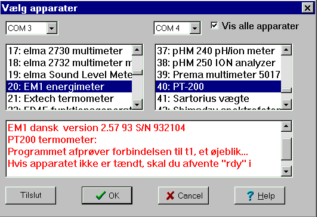
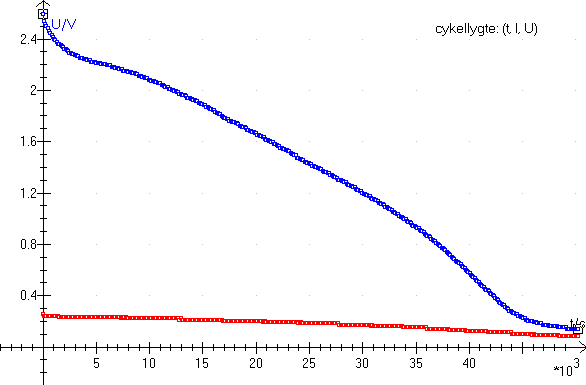
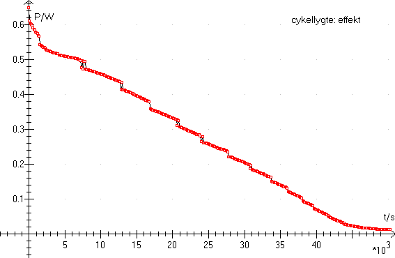

I denne menu kan vælges mellem ca. 60 apparater, nemlig apparaterne, som er mærket med 2) i listen af apparater inddelt efter emne.

Det forudsættes, at du har mindst to serielle porte: COM1 , COM2,... COM8.
Mange pc'ere benytter en hardwaremus, så er begge porte ledige, ellers må du fjerne musen og sikre dig at pc'en ikke indlæser en musedriver ved opstart. Datalyse indstiller på de to første ledige COM-porte, men indstillingen kan ændres.
På billedet er der forbindelse til Energimetret, men ikke til PT-200. Derfor den røde tekst.
Når du har valgt de to apparater, kan du i menupunktet for apparater vælge:
Benyt fx en vægt og et multimeter til forsøg med Laplaces lov, eller to multimetre til at måle strømstyrke og spænding fra en cykellygte:

I dette tilfælde udregnes effekten i tabellen som søjleoperation og grafen tegnes:

Herefter integreres effekten numerisk og resultatet er 13.3 kJ.
Tak til Haderslev Katedralskole for forsøget.